Crear vídeos con IA: de una idea a un vídeo listo para publicar
Escribe una frase. La app hace el resto.
De una frase a un vídeo terminado
«¿Por qué el mar es salado?»
Eso es todo lo que escribes. En unos minutos tienes el vídeo vertical con gancho, voz, animación y subtítulos.
 EL MAR ES SALADO PORQUE…
EL MAR ES SALADO PORQUE… Todo el vídeo, no solo una parte
Elige cómo se ve

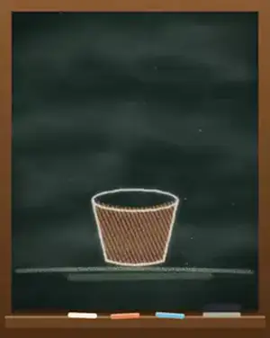

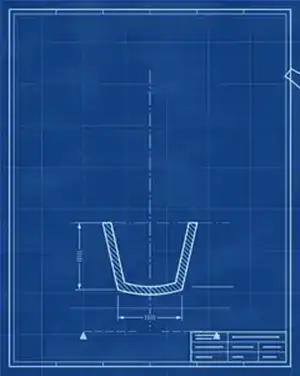

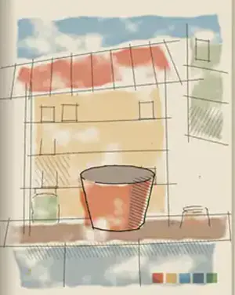


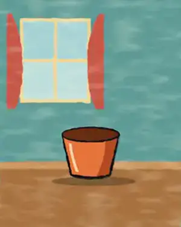
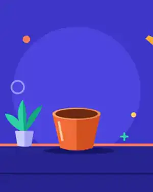


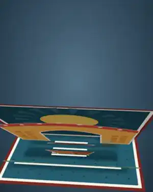
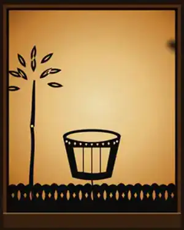

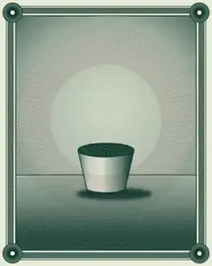
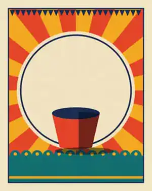
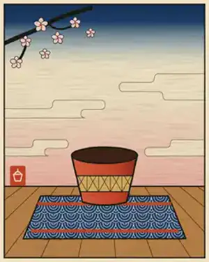

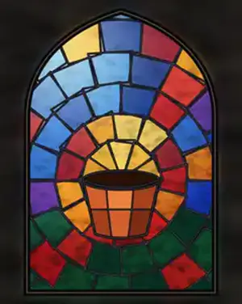

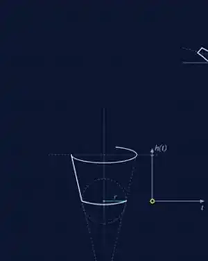
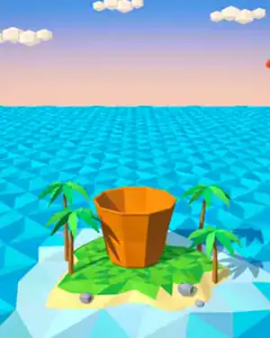
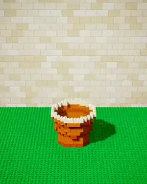
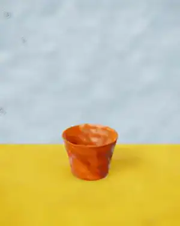
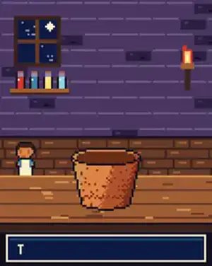

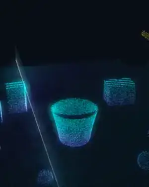

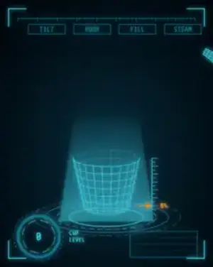


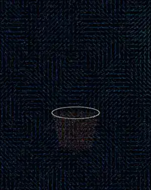
Sube lo que grabaste. Nilo Cut lo edita.
Lo que más se pregunta.
¿Cómo crear vídeos con IA para TikTok?
Con Nilo Studio IA escribes una idea y la app genera el vídeo vertical 9:16 con guion, voz, animación y subtítulos. Luego lo publicas o lo programas en TikTok desde la misma app.
¿Qué necesito para crear vídeos con Nilo Studio IA?
Un Mac con macOS 12 o superior y tu plan de Claude Pro o Max, que es el motor que escribe y anima. Por ahora no hay versión para Windows.
¿Puedo crear vídeos con IA sin mostrar mi cara?
Sí. Puedes crear vídeos animados con voz de IA (formato faceless) o usar tus propios clips si prefieres salir en cámara.
¿En qué idiomas crea los vídeos?
En español y en otros idiomas: el guion, la voz y los subtítulos siguen el idioma que elijas.
¿Sirve para Reels de Instagram y YouTube Shorts?
Sí. Los vídeos son verticales y se publican en TikTok, Instagram, Facebook y YouTube.
Tu idea, hecha vídeo y publicada.
Nilo Studio IA crea, edita, programa y publica tus vídeos verticales desde tu Mac.
Más guías: Automatizar y programarEstilosAlternativas · Funciones